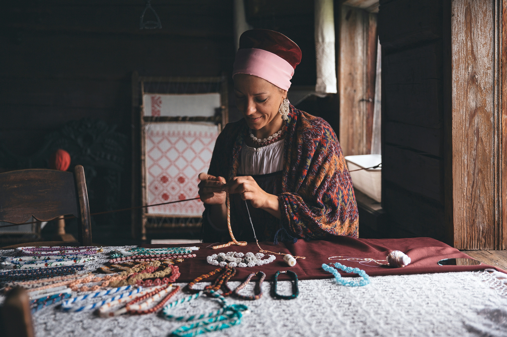

Ana López
Ceramista
Especialista en técnicas tradicionales de barro.
Ceramista
Especialista en técnicas tradicionales de barro.

Ebanista
Experto en mobiliario de madera sostenible.

Textil
Especialista en tejidos naturales y tintes ecológicos.

Vidrio
Maestro en vidrio soplado con técnicas contemporáneas.
Vidrio
Maestro en vidrio soplado con técnicas contemporáneas.
Vidrio
Maestro en vidrio soplado con técnicas contemporáneas.